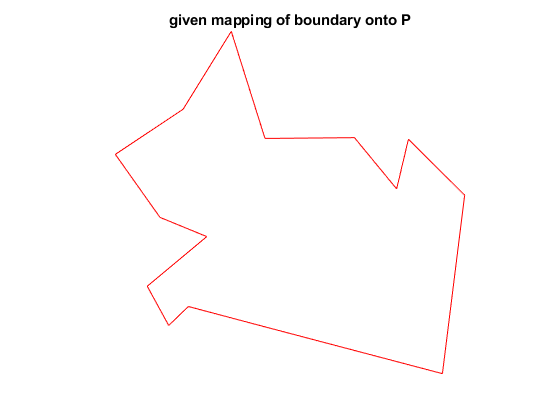

Contents
Initialization
clear close all addpath Functions Draw drawLabels = false;
Input -- (V,F)
rng(1) [V,F,P,W] = generateProblem_RandomExample(32,10);
Warning: Some input points are not referenced by the triangulation. Warning: Some input points are not referenced by the triangulation. Warning: Some input points are not referenced by the triangulation.
V - nx2 matrix of the coordinates of n vertices
F - mx3 matrix where the i'th row contains the indices of the i'th triangle
P - nx2 matrix with boundary contraints (prescribing the coordinates of boundary vertices)
vertices that are not constrained (interior) are NaN
W - nxn weighted adjacency matrix - the i,j entry is the weight of the edge connecting i to j (zero if no edge)We assume that the problem is set up such that the cone condition holds: Given an embedding such that the cone condition holds, the goal of this code is to compute an extended graph + weights that enable the reduction to classic Tutte's proof.
Draw input
drawInput();
Compute embedding into P -- (X,F)
Solve a Laplace linear system with weights W and boundary constraints P
[X, G, bndInd] = solveDiscreteLaplace(W, P);
X - embedding coordinates G - the action of the Laplacian at each vertex w.r.t. X bndInd - indicator vector of boundary vertices
Draw P, illustrate the cone condition and the target embedding
drawBoundary(); drawBoundaryWithForces(); drawTargetEmbedding();
Extend the triangulation -- F -> F'
Extend the triangulation by adding ONLY new triangles (=edges)
[F_add, P_ext] = extendTriangulation(P, find(bndInd));
F_add - new triangles, obtained by triangulating the difference between
the convex hull of P and P itself
P_ext - the boundary of the extension = convex hull of PDraw convex hull and new triangles
drawBoundaryExtension();
The extended triangulation F' is then the concatenation of the original triangles F and new triangles F_add:
F_ext = [F;
F_add];
F' defines a 3-connected triagulation graph that has disk topology.
However, the drawing (V,F'), with the new triangles added to the input triangulation, is not a valid drawing
drawInputExtension();
Compute an new embedding (drawing) of the extended triangulation -- (U,F')
Use Tutte's graph embedding with uniform weights and boudnary vertices uniformly spaced on the circle
W_ext_uniform = computeUniformWeights(F_ext); P_ext_uniform = mapPolygonToCircle(P_ext);
Solve a Laplace linear system with uniform weights and boudnary vertices uniformly spaced on the circle
[U, ~, bndInd_ext] = solveDiscreteLaplace(W_ext_uniform, P_ext_uniform);
Draw (U,F')
drawAuxiliaryEmbedding();
Construct new weights on F' and embed -- (Z,F')
Find weights on the extended triangulation for which the embedding (onto the convex hull) coincides with the desired embedding (onto the non-convex polygon)
W_ext_construction = constructWeightsOnExtension(bndInd, bndInd_ext,... W, W_ext_uniform,... X, P, G);
Optimal solution found. Optimal solution found. Optimal solution found. Optimal solution found. Optimal solution found. Optimal solution found. Optimal solution found. Optimal solution found.
The construction follows the cases in the proof:
- For interior vertices, we use the input weights as-is. - For boundary vertices we may choose any arbitrary weights, as these are constrained The remaining vertices were boundary vertices of the original, unextended input domain, that became interior via the extension. - If such vertex was originally a boundary reflex vertex on the input mesh, the cone condition implies that proper weights exist for it in the extension. - If such vertex was originally a boundary convex vertex, the edges it connects to in the extension span more than 180 degrees, and thus proper weights also exist.
It is evident that the discrete Laplace equation (stemming from the Tutte’s embedding) defined by the above weights is exactly satisfied. The solution to Tutte’s embedding is unique, hence, solving it using these constructed weights, with the same boundary conditions will yield the exact given input.
Solve a Laplace linear system with weights constructed and boundary constraints P'
[Z, ~, ~] = solveDiscreteLaplace(W_ext_construction, P_ext);
Draw (Z,F')
drawConstructedEmbedding();
By construction we have Z=X
Summary
drawSummary();
- Input is (1)(V,F).
- Map (1)(V,F) to (2)(X,F) by solving Laplace with given weights and boundary P. Assume cone condition holds. Want to show it is a homeomorphism.
- Extend the triangulation F->F'. Still don't know (4)(X,F') is a valid drawing. Also (3)(V,F') could have intersections.
- Use Tutte (for graphs) to obtain a valid drawing (5)(U,F')
- Construct weight and use Floater to obtain a homeomorphism (5)(U,F')->(6)(Z,F'). Moreover, by construction, Z=X.
- Consequently (7)(U,F)->(8)(Z,F)=(2)(X,F) is a homeomorphism. This already implies that (2)(X,F) is a valid drawing. Remains to show that (1)(V,F)->(2)(X,F) is a homeomorphism.
- Suffices to show that (1)(V,F)->(7)(X,F) is a homeomorphism. This follows from Whitney's embedding theorem for 3-connected graphs, by noting that the drawing (7)(U,F) is bounded by the same outer face as (1)(V,F).